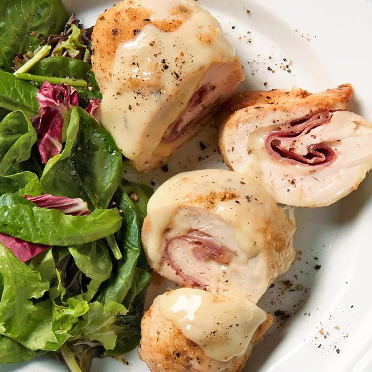
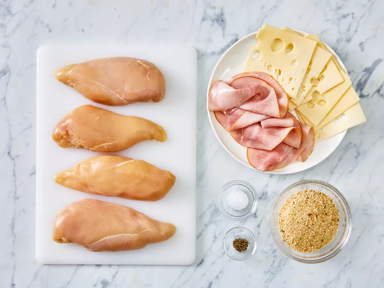
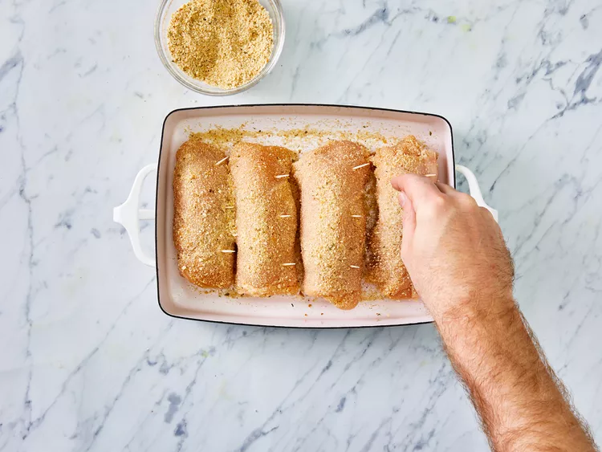

Chiken Cordon Bleu

Don't feel like going out tonight? You can easily make a gourmet restaurant-worthy meal in the comfort of your own kitchen with this top-rated chicken cordon bleu recipe. It's impressive, delicious, and way simpler than you think.
Ingredients
- nonstick cooking spray
- 4 skinless, boneless chicken breast halves
- ¼ teaspoon salt
- ⅛ teaspoon ground black pepper
- 6 slices Swiss cheese
- 4 slices cooked ham
- ½ cup seasoned bread crumbs
- Step: Gather all ingredients.

- Step:Preheat oven to 175 degrees C (350 degrees F). Coat a 7x11-inch baking dish with nonstick cooking spray.
- Step:Pound chicken breasts to 1/4 inch thickness.
- Step:Sprinkle each piece of chicken on both sides with salt and pepper. Place 1 Swiss cheese slice and 1 ham slice on top of each breast. Roll up each breast.
- Step: Secure with a toothpick. Place in the prepared baking dish and sprinkle chicken evenly with bread crumbs.

- Step:Bake in the preheated oven until chicken is no longer pink, 30 to 35 minutes.
- Step:Remove from the oven, and place 1/2 Swiss cheese slice on top of each breast. Return to the oven until cheese has melted, 3 to 5 minutes. Remove toothpicks and serve immediately.